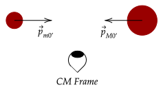

We noted before that we can do physics in any reference frame. So far, we have analyzed collisions all in a stationary reference frame. For example, an elastic collision is shown below.
This reference frame is called the "lab frame".
Obviously, it is completely alright to use this reference frame. In fact, it has served as well for the past few tutorials. However, in this tutorial, we will leave this reference frame and try another one, which may be more useful.
One useful property we can do is setting the initial momentum to zero. If this is true, it simplifies our calculations a lot. So much so, that we have a special name for this reference frame.
Below is a visual interpretation of what this frame would look like. Here, we can see that the two objects appear to have the same magnitude of momentum, but in opposite directions; meaning their initial momenta is zero.
We can analyze the two reference frames to see they have the same visual cues; at the stationary reference frame, if you focus at the top, the objects do appear to collide head on.
Meanwhile, in the moving reference frame, it can be seen that before collision, the black object is half in front of the object, while the red object is in front after collision. The same phenomena appears.
Question 1
In the CM frame, the initial momenta of the objects is zero. Below shows a collision in this CM frame, with the right object having more mass than the other object.

In this reference frame, are the object's speeds equal? If not, which of the two speeds is larger?
Answer
We first write out the equation for the initial momentum, which should be zero.
Now, we can write out the equation for the initial momentum in terms of the masses and speeds.
Since , it must mean that the speeds must not be equal for this equality to hold. Further, this means the speed of the more massive object is less than the less massive object.
To begin on how we can find this frame, we will first use its defining factor, which is the initial momentum is zero.
To have this happen, we need to have the speed of the moving reference frame. Using our equation for relative motion, we have two equations for the speed. We will use our old syntax, with objects of masses and . We denote the speed of the reference frame with .
Now, let's write the equation for the conservation of momentum in the CM frame, and then substitute in the values above.
Now, we can solve for the speed of the reference frame.
Thus, if we move at this speed, it will appear that the initial momentum is zero. Consequently, by the conservation of momentum, it means that the final momentum after collision must also be zero.
Question 2
Show that the speed of the CM frame is constant before and after a head-on collision.
Answer
We first write out the equation for the speed of the CM frame.
Notice how the above is precisely the initial momentum of the two objects with respect to the lab frame. Thus, we can rewrite the equation like so.
Since momentum is conserved, this must be equal to the momentum of the objects with respect to the lab frame after collision; thus, they must be equal.